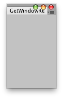

EditorWindow.GetWindowWithRect
public static EditorWindow GetWindowWithRect(Type t,
Rect rect,
bool utility = false,
string title = null);
Parameters
| t | The type of the window. Must derive from EditorWindow. | |
| rect | The position on the screen where a newly created window will show. | |
| utility | Set this to true, to create a floating utility window, false to create a normal window. | |
| title | If GetWindow creates a new window, it will get this title. If this value is null, use the class name as title. |
Description 描述
Returns the first EditorWindow of type t which is currently on the screen.
If there is none, creates and shows new window at the position rect and returns the instance of it.

Create an empty 100x150px window at the upper left corner of the screen.
using UnityEngine; using UnityEditor;
// Create a dockable empty window at the top left corner of the screen // with 100px width and 150px height
public class EditorWindowTest : EditorWindow { [MenuItem("Example/Display simple sized Window")] static void Initialize() { EditorWindowTest window = (EditorWindowTest)EditorWindow.GetWindowWithRect(typeof(EditorWindowTest), new Rect(0, 0, 100, 150)); } }
Parameters
| t | The type of the window. Must derive from EditorWindow. | |
| rect | The position on the screen where a newly created window will show. | |
| utility | Set this to true, to create a floating utility window, false to create a normal window. | |
| title | If GetWindow creates a new window, it will get this title. If this value is null, use the class name as title. | |
| focus | Whether to give the window focus, if it already exists. (If GetWindow creates a new window, it will always get focus). |
Description 描述
Returns the first EditorWindow of type t which is currently on the screen.
If there is none, creates and shows new window at the position rect and returns the instance of it.